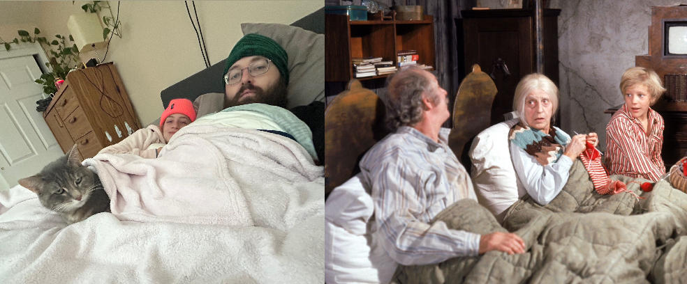

2024 January Winter Storm
In January 2024, Oregon was battered by a formidable storm, leaving a lasting imprint on our community. Months later, the scars of destruction still linger in our neighborhood, evident in the tarps draped over homes awaiting repair from the trees that crashed through them.

Timeline of Events
Friday, Jan. 12th
A winter storm watch for the weekend warned of cold weather and snow. Despite no snowfall, we erred on the side of caution, rescheduling plans for my partner Tanner’s family birthday dinner.
Saturday Jan. 13th
The day started calmly but turned tumultuous as winds picked up in the afternoon, leading to a power outage by 3 PM. Seeking refuge at our local watering hole, we waited for an update from PGE that wouldn’t come for a few days. Enduring the biting cold again, we walked home, and huddled under blankets with our beloved cat, Lulu (as seen in the picture above).
Sunday Jan. 14th
With no updates from the power company, our day was spent navigating the cold reality of a powerless home. Concern for Lulu’s well-being prompted makeshift measures to retain heat, including burning old furniture and fortifying our living room against the chill. The fire went out after midnight, but the room still retained heat more than the other rooms in the house.
Monday Jan. 15th
As another storm loomed on the horizon, we made the decision to seek shelter at Tanner’s mom’s house, braving treacherous roads with our faithful companion, Lulu. The drive marked the first communication from the power company for power to return 10PM Tuesday.
Tuesday Jan. 16th
Despite the icy roads and uncertainty, we received a belated message of restored power at midnight. A modest birthday gift for Tanner amidst the challenges.
Wednesday Jan. 17th
Eager to return home, we cautiously navigated icy roads, only to be greeted by the aftermath of a flooded bathroom upon arrival. Despite intermittent power, we resolved to stay put, improvising with limited resources. PGE says power should be back on tomorrow night at 10PM.
Thursday Jan. 18th
Tanner ventured out in search of firewood checking multiple locations, only to find some at Lowes. Power was out all day, and did not return until 8pm.
Friday Jan. 19th
Power was on for most of the day, but went out twice in the later afternoon. Roads are icy, and un-drivable.
Saturday - Sunday
Power stayed on, but roads and sidewalks were still icy.
Prepared Checklist
Turn off water lines.
Check travel chargers are fully charged.
Essential electronics are fully charged.
Spare batteries.
Spare candles.
Remove water from glass.
Prepare overnight bag for quick exits.
Bonus Items
Costco generator.
Batteries for headlamps.
Spare firewood.